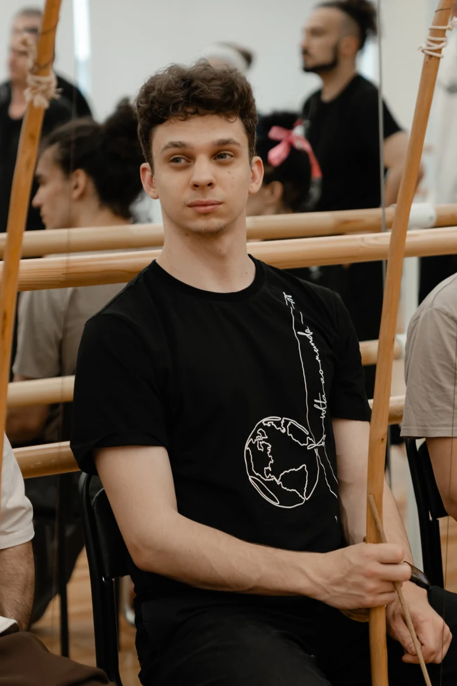
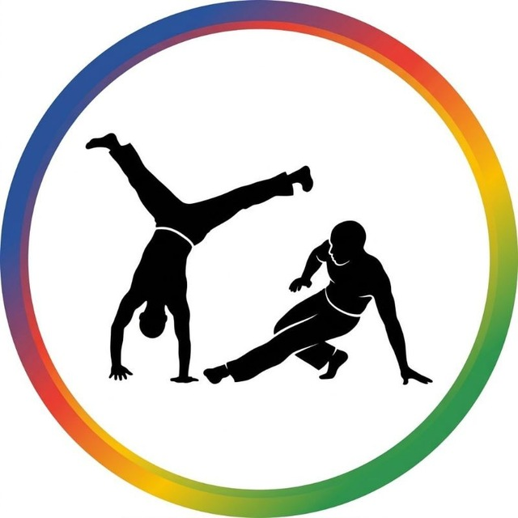
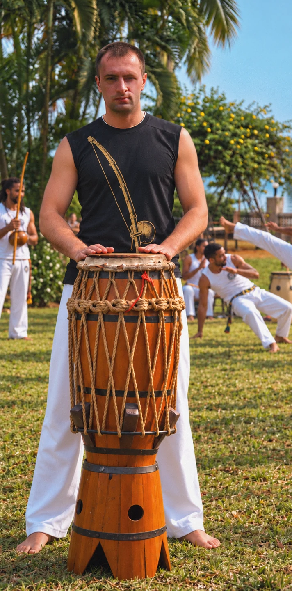

Валерий Колчак
В капоэйре с 2019 года
Хочу помогать детям и взрослым полюбить движение, найти своё место в группе и раскрыться через капоэйру и музыку.
Понедельник, среда, пятница
Группы 5+, 7+, 11+
Подростки и взрослые 15+, 18+

CAPOEIRAЗдесь нормально быть собой!
Движение, музыка и люди,
с которыми хочется расти.
Дети от 4 лет · подростки и взрослые
В нашей группе можно знакомиться с капоэйрой с разных сторон.
Капоэйра соединяет движения, взаимодействие с партнёром и музыку. Есть группы для детей, подростков и взрослых.
От 4 лет · группы по возрастуМы учились вместе, росли как команда
и нашли круг, в котором можно быть собой.
Знакомство с группой начинается с разговора с тренером.

В капоэйре с 2019 года
Хочу помогать детям и взрослым полюбить движение, найти своё место в группе и раскрыться через капоэйру и музыку.
Понедельник, среда, пятница
Группы 5+, 7+, 11+
Подростки и взрослые 15+, 18+

В капоэйре с 2011 года
Работаю с детьми от четырёх лет. Хочу передать ученикам радость движения и создать сообщество, где можно быть собой.
Вторник, четверг
Группы 4+ и 7+
Занятия ЮрияНе уверены, какая группа подойдёт? Поможем выбрать при записи.
В капоэйре движения всегда встречаются с музыкой.
Она задаёт ритм игры и объединяет участников.
Здесь можно учиться и двигаться, и играть.
Беримбау, атабаке и пандейру —
главные музыкальные проводники в мир капоэйры.
МузыкаСуббота · 12:00–13:00 · 10+
РодаСуббота · 14:00–15:00 · 10+
БатукадаСуббота · 15:00–17:00
В этот день нет занятий выбранного тренера. Выберите другой день или «Все».
Подобрать группу с тренером8 занятий — 4 600 ₽ · 12 занятий — 4 900 ₽.
Подберём группу для ребёнка или взрослого.
Запишись через бота или напиши тренеру.
* Если бот не отвечает, напиши тренеру в Telegram или позвони по номерам ниже.